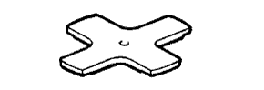
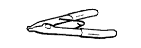
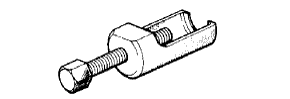

БЛОК АВТОМАТИЧЕСКОЙ ТРАНСМИССИИ > РАЗБОРКА > Подготовка
|  |
|
SST

| 09240-00020
| Набор проволочных калибров
| 
| 09350-30020
| Набор инструментов для автоматической трансмиссии
TOYOTA
|
| (09350-07020)
| Съемник масляного насоса
| 
| (09350-07030)
| Приспособление для сжатия поршневых пружин № 1
|
| (09350-07040)
| Приспособление для сжатия поршневых пружин № 2
| 
| (09350-07050)
| Приспособление для сжатия поршневых пружин № 3
| 
| (09350-07060)
| Съемник стопорных колец № 1
| 
| (09350-07070)
| Съемник стопорных колец № 2
|
| (09350-07080)
| Съемник реактивной втулки тормоза
|
| (09350-07090)
| Съемник поршня тормоза № 1
| 
| 09610-20012
| Съемник рулевой сошки
|
РЕКОМЕНДУЕМЫЕ ИНСТРУМЕНТЫ
| 09032-00100
| Инструмент для обрезки прокладки масляного поддона
| |
|
SSM
| Фирменный герметик Toyota 1281, Three Bond 1281 или аналогичный
|
| Фирменный герметик Toyota 1324, Three Bond 1324 или аналогичный
| |
|
ОБОРУДОВАНИЕПрибор для измерения углов
| -
| Штангенциркуль
| -
| Нутромер
| -
| Индикатор часового типа
| -
| Комплект плоских щупов
| -
| Микрометр
| -
| Поверочная линейка
| -
| Динамометрический ключ
| -
| V-образная призма
| -
| Штангенциркуль
| -
| |
|
РЕКОМЕНДУЕМЫЕ ИНСТРУМЕНТЫ
| 09017-1C130
| Разрезная головка 17 мм
| -
| 
| 09031-00030
| Бородок с тонким цилиндрическим концом
| -
| 
| 09082-00040
| Электрический диагностический прибор TOYOTA
| -
| |
|
СМАЗОЧНЫЕ МАТЕРИАЛЫЖидкость для автоматических трансмиссий: Заполнение сухой системы
| 9,9 литра (10,5 кварты США, 8,7 английской кварты)
| Жидкость для автоматических трансмиссий WS от компании Тойота
| Жидкость для автоматических трансмиссий: Заполнение после слива
| 2,7 литра (2,9 кварты США, 2,4 английской кварты)
| |
|